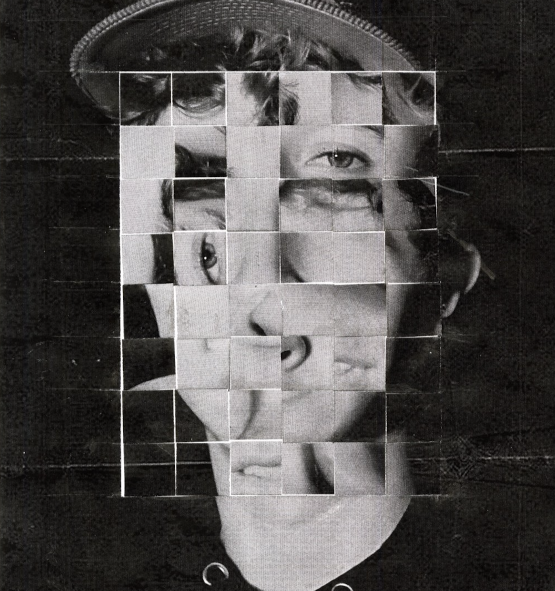
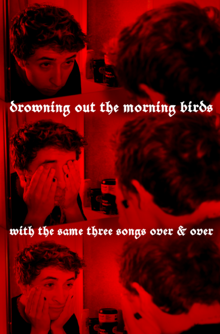
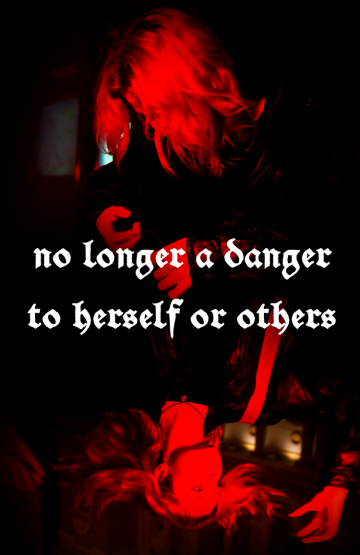
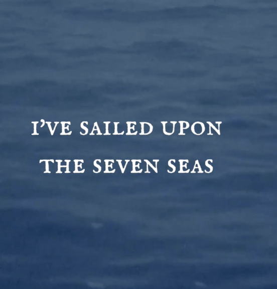
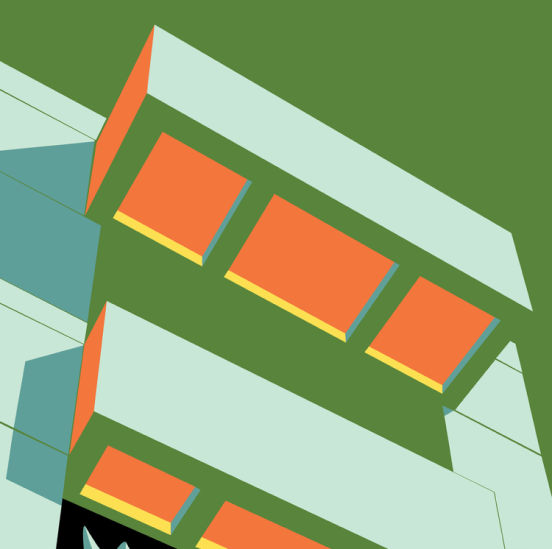
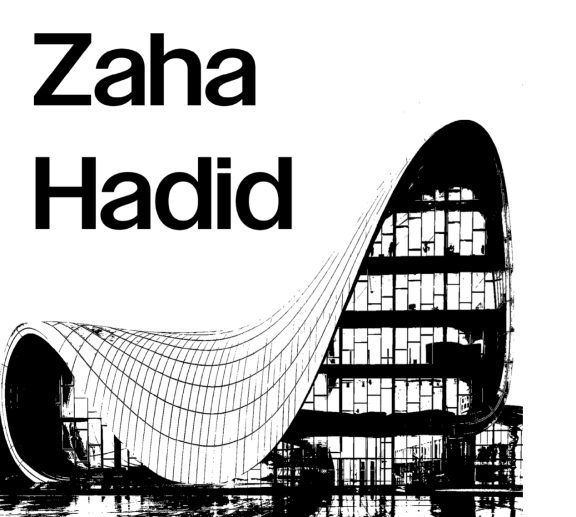

Mental Health Awarness
This design encourages open conversations about mental health, acknowledging that everyone's journey is unique and that understanding and empathy are essential in supporting those who may be dealing with such issues.


Lyric Posters For Phoebe Bridgers
This series of posters I created aims to capture the essence of Phoebe Bridgers' music by visually translating the melancholic and emotionally charged nature of her lyrics. It invites viewers to engage in sn emotional journey that mirrors the profound storytelling that her music offers. Inviting fans and photogrsphy enthusiasts alike to delve deeper into the poetic world of Phoebe Bridgers.

Maya Angelou Lyric Video Shot On Super 8
Maya Angelou has always been inspiring to me, and I wanted to honor her in a video. Using her poem "Human Family" I created a lryics agiast the background of super8 footage.

Architectural Geometry
I used Adobe Illistrator to create nine panels of geometric designs of buildings on the USFCA campus. I explored how to use minimal colors to establish a solid design philiosphy.

Zaha Hadid Tribute
In an ode to the late architect Zaha Hadid I created a booklet containing her most prolefic buildings. Along with the buildings I inculded information reguarding their achivments and background.